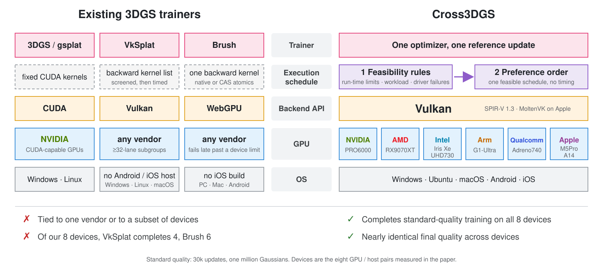
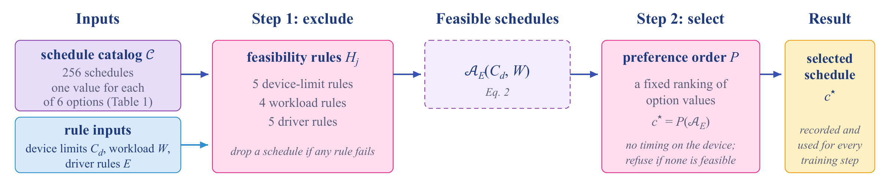
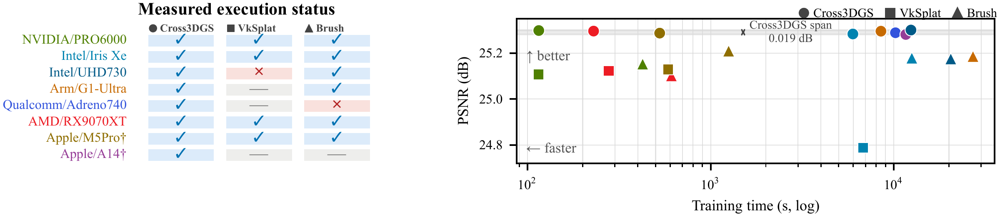
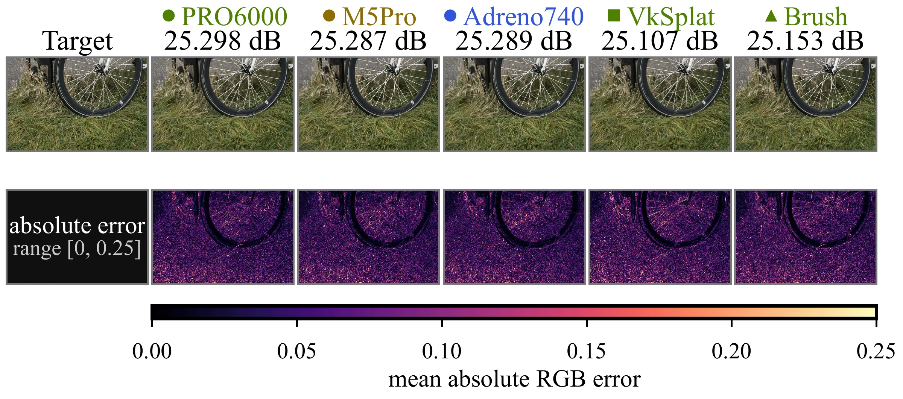
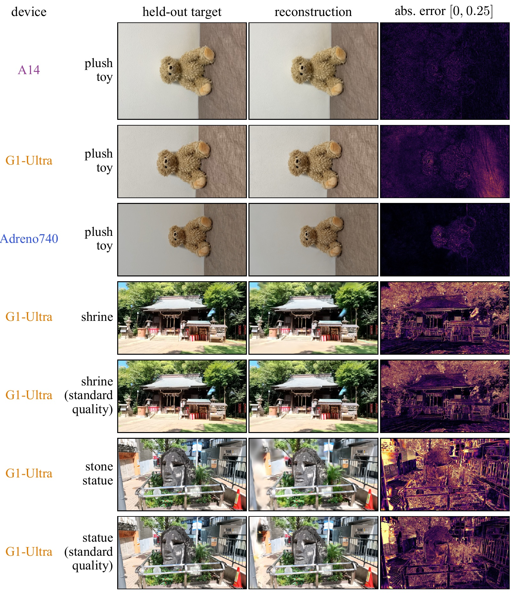

Scenes captured with handheld and wearable cameras are still shipped to a CUDA workstation for 3D Gaussian Splatting (3DGS) training. Training on the device that captured them, or on its companion phone or laptop, requires more than translating kernels: GPUs and drivers differ in parallel features, memory limits, and command submission, and these differences decide whether a training schedule executes and returns the correct update.
We present Cross3DGS, a cross-vendor, cross-platform Vulkan trainer that keeps one optimizer and chooses its execution schedule per device in two steps: rules on device limits, workload size, and observed driver failures exclude the schedules known not to run correctly, and a fixed preference order selects one of the remaining feasible schedules. The same core completes standard-quality training (30k updates, one million Gaussians) on every configuration we measured, spanning NVIDIA, Intel, Arm, Qualcomm, AMD, and Apple GPUs and including Android devices and an iPhone, whereas the existing portable trainers VkSplat and Brush do not run on some of the mobile GPUs.
Averaged over 11 scenes on a workstation, Cross3DGS has higher quality than VkSplat with no significant difference in training time, and Brush reports about three times the training time at comparable quality. The final quality of Cross3DGS is nearly identical across devices. A mobile application turns a handheld capture into a viewable model entirely on the device.
SfM and 3DGS training are the same native code on both platforms; only the camera capture (ARCore / ARKit) and a thin UI (Kotlin / Objective-C++) are platform-specific.
The same capture-to-view application on Android (Xiaomi 17T Pro, left; Xiaomi Pad 6S Pro 12.4, middle) and iOS (iPhone 12 Pro, right): capture, sparse SfM, 3DGS optimization, and viewing, all on the device. Stages are time-lapsed per device (factor shown under each); the clock is real time since capture start, and the viewer plays in real time. These are 60-frame runs with the screen recorder on; the paper reports 100-frame sessions without it.
Two outdoor scenes, a shrine (left) and a stone statue (right), processed on the Android phone (Xiaomi 17T Pro) from captures saved on it: frame extraction, sparse SfM, 3DGS optimization, and viewing, all on the device. Stages are time-lapsed as above; the clock is real time since frame extraction started. These are 60-frame runs with the screen recorder on, so their times differ from the numbers in the paper. In the stone-statue recording, pedestrians and vehicles are blurred in post-processing.

One optimizer, many devices. Instead of hand-tuning a separate port per GPU, Cross3DGS keeps a catalog of execution schedules and picks one per device. Step 1 drops every schedule that fails a feasibility rule on the device limits, the workload, and known driver failures. Step 2 picks one of the remaining schedules with a fixed preference order. Every gradient method in the catalog is checked offline against the reference update.




@InProceedings{Sato_2027_WACV_Cross3DGS,
author = {Sato, Hiroyuki and Takimoto, Yusuke},
title = {Cross3DGS: Unified Vulkan-Based 3D Gaussian Splatting Training from Workstations to Mobile Devices},
booktitle = {Proceedings of the IEEE/CVF Winter Conference on Applications of Computer Vision (WACV) Workshops},
year = {2027}
}